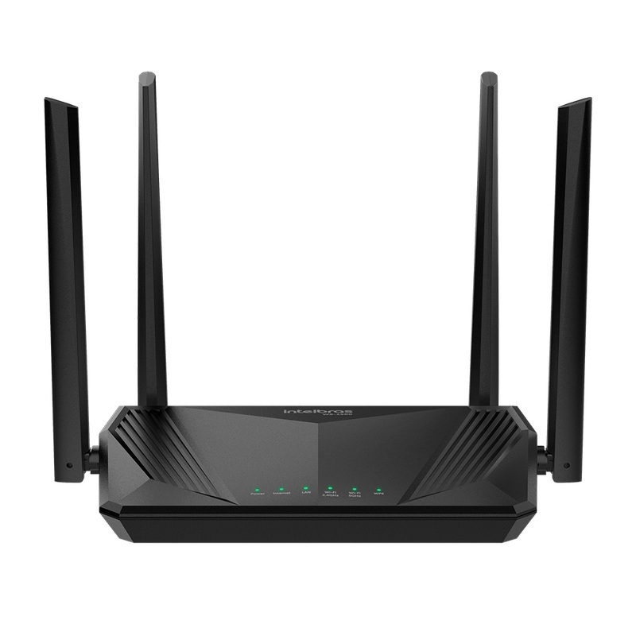
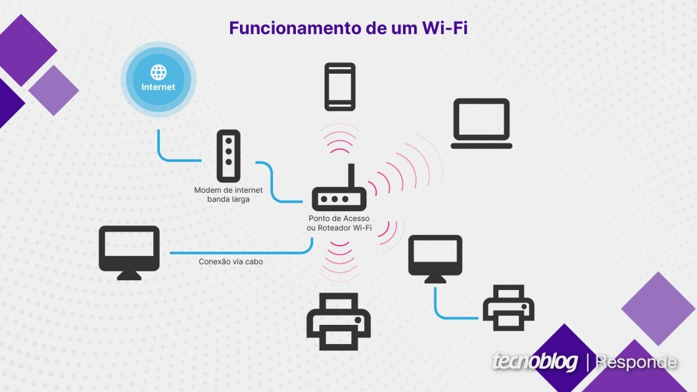

WI-FI (PADRÕES IEEE 802.11)
ESTRUTURA FÍSICA E CABEAMENTO
WI-FI EM REDES LOCAIS CORPORATIVAS (WLAN)
O Wi-Fi é uma tecnologia de comunicação sem fio baseada na família de padrões IEEE 802.11, utilizada para conectar computadores, dispositivos móveis e equipamentos compatíveis a uma rede local sem a necessidade de um cabo de dados entre cada cliente e o ponto de acesso. Essas redes são denominadas WLAN (Wireless Local Area Network).
Em ambientes corporativos e industriais, os pontos de acesso (Access Points - APs) formam a infraestrutura de comunicação por rádio. Normalmente, eles são conectados à rede principal por Ethernet, permitindo que os dispositivos sem fio acessem servidores, sistemas de supervisão e outros recursos da rede. A cobertura pode ser formada por um ou vários pontos de acesso, de acordo com o tamanho e as características do local.
MEIOS DE TRANSMISSÃO E FAIXAS DE FREQUÊNCIA ADOTADAS
MEIO FÍSICO E ANTENAS
O meio de transmissão do Wi-Fi é o espaço livre, por onde se propagam ondas eletromagnéticas de radiofrequência (RF). Portanto, o enlace entre o ponto de acesso e os dispositivos clientes não utiliza par trançado ou fibra óptica para transportar os dados pelo ar. As antenas convertem os sinais elétricos de radiofrequência em ondas eletromagnéticas e realizam o processo inverso na recepção.
- Antenas internas: ficam integradas ao equipamento e são comuns em notebooks, smartphones, roteadores domésticos e pontos de acesso corporativos.
- Antenas externas: podem ser conectadas ao equipamento por cabos coaxiais e permitem selecionar modelos omnidirecionais ou direcionais, conforme a área que se deseja atender.
- Infraestrutura de acesso: os pontos de acesso são geralmente ligados a switches por cabeamento Ethernet, que transporta o tráfego entre a WLAN e a rede cabeada.

FAIXAS DE FREQUÊNCIA UTILIZADAS
Os equipamentos Wi-Fi operam em faixas de radiofrequência definidas e autorizadas pelas regulamentações de cada país. As faixas mais utilizadas pelas gerações atuais são:
- 2,4 GHz: apresenta, em geral, maior alcance e melhor propagação através de obstáculos do que as faixas mais altas. Entretanto, possui menos canais disponíveis e costuma sofrer maior interferência de outras redes e dispositivos que compartilham essa faixa.
- 5 GHz: oferece mais canais e maior possibilidade de uso de canais largos, favorecendo taxas de transmissão elevadas. Seu sinal tende a sofrer maior atenuação por obstáculos do que o sinal em 2,4 GHz.
- 6 GHz: amplia a quantidade de espectro disponível para equipamentos compatíveis com Wi-Fi 6E e Wi-Fi 7, permitindo mais canais e menor competição com dispositivos Wi-Fi legados. Sua utilização depende da regulamentação e da disponibilidade da faixa em cada país.
A escolha da faixa depende do alcance necessário, da quantidade de dispositivos, da interferência presente e da capacidade dos pontos de acesso e clientes. As três faixas não são necessariamente suportadas por todos os equipamentos.
CONECTORES PADRONIZADOS E IDENTIFICAÇÃO
Como a comunicação entre o ponto de acesso e os clientes ocorre por radiofrequência, não existe um conector de dados físico entre esses dispositivos equivalente ao RJ45 utilizado na Ethernet. Os conectores aparecem principalmente na ligação das antenas e na conexão do ponto de acesso à infraestrutura cabeada.
CONEXÕES DE RÁDIO E ANTENAS
- Antenas integradas: não utilizam um conector externo visível, pois são instaladas dentro do próprio equipamento.
- SMA e RP-SMA: conectores coaxiais utilizados em determinados roteadores e pontos de acesso com antenas removíveis. A escolha depende do fabricante e do modelo; não são conectores universais definidos pelo padrão IEEE 802.11.
- N-type: conector coaxial rosqueado encontrado em algumas instalações com antenas externas, especialmente em enlaces e equipamentos destinados a ambientes externos.
CONEXÃO DO PONTO DE ACESSO À REDE CABEADA
- RJ45 (8P8C): conector normalmente utilizado na porta Ethernet do ponto de acesso para ligação ao switch da rede local. A categoria do cabo e a velocidade da porta devem ser compatíveis com a capacidade do equipamento.
- SFP/SFP+: switches de distribuição e equipamentos apropriados podem utilizar módulos ópticos para conexões por fibra, dependendo do projeto. Essa interface pertence ao enlace cabeado, e não à transmissão Wi-Fi, e não é uma conexão de rádio do ponto de acesso.
- Conector de alimentação CC: alguns equipamentos utilizam uma fonte externa conectada a uma entrada de corrente contínua quando não recebem energia por PoE.
TOPOLOGIAS SUPORTADAS EM REDES WI-FI
MODO DE INFRAESTRUTURA (BSS) - ORGANIZAÇÃO COM PONTO DE ACESSO
No modo de infraestrutura, os dispositivos clientes se comunicam por meio de um ponto de acesso. O conjunto formado pelo AP e pelas estações associadas é denominado BSS (Basic Service Set). Essa é a organização predominante em redes corporativas e domésticas, pois permite centralizar a autenticação, o controle de acesso e a ligação com a rede cabeada.

CONJUNTO ESTENDIDO (ESS) - COBERTURA COM VÁRIOS PONTOS DE ACESSO
Um ESS (Extended Service Set) reúne dois ou mais BSS interligados por um sistema de distribuição, normalmente a infraestrutura Ethernet da empresa. Essa arquitetura amplia a cobertura e permite que um dispositivo se movimente entre áreas atendidas por diferentes pontos de acesso. O processo de roaming depende da compatibilidade dos equipamentos e das configurações da rede.
TOPOLOGIA MESH E COMUNICAÇÃO AD HOC
- Rede Mesh: utiliza vários pontos de acesso ou nós sem fio interligados, permitindo encaminhar dados entre diferentes pontos e ampliar a cobertura. A implementação pode seguir o padrão IEEE 802.11s ou soluções específicas dos fabricantes.
- Modo Ad Hoc (IBSS): permite que estações sem fio se comuniquem diretamente, sem depender de um ponto de acesso central. É uma configuração de uso mais restrito em comparação ao modo de infraestrutura.
INTERFACE ELÉTRICA E TRANSMISSÃO DE SINAIS
SINALIZAÇÃO E NÍVEIS NA COMUNICAÇÃO WI-FI
A transmissão Wi-Fi utiliza sinais de radiofrequência modulados digitalmente. Diferentemente de uma interface cabeada baseada em níveis de tensão medidos nos condutores, a comunicação pelo ar é caracterizada por frequência, potência do sinal, largura do canal, modulação e relação sinal-ruído. A potência recebida é normalmente expressa em dBm, enquanto a largura do canal é expressa em MHz.
TÉCNICAS DE MODULAÇÃO E CODIFICAÇÃO
- DSSS (Direct Sequence Spread Spectrum): técnica de espalhamento espectral utilizada em versões antigas do IEEE 802.11, especialmente nas primeiras implementações e no padrão 802.11b.
- CCK (Complementary Code Keying): método de modulação empregado pelo padrão 802.11b para aumentar a taxa de transmissão na faixa de 2,4 GHz.
- OFDM (Orthogonal Frequency Division Multiplexing): divide o canal em diversas subportadoras ortogonais, permitindo transmitir dados de forma eficiente e reduzindo os efeitos de determinadas condições de propagação multipercurso.
- OFDMA (Orthogonal Frequency Division Multiple Access): utilizado nos padrões mais recentes, especialmente no Wi-Fi 6, divide o canal em unidades de recursos que podem ser atribuídas a diferentes dispositivos, tornando o uso do espectro mais eficiente.
- QAM (Quadrature Amplitude Modulation): combina variações de amplitude e fase para representar símbolos com vários bits. Modulações de ordem mais alta transportam mais bits por símbolo, mas exigem melhor qualidade de sinal.
TECNOLOGIAS DE ANTENAS E TRANSMISSÃO
- MIMO (Multiple Input Multiple Output): utiliza múltiplas antenas de transmissão e recepção para aumentar a capacidade do enlace e melhorar a robustez da comunicação.
- MU-MIMO (Multi-User MIMO): permite que o ponto de acesso atenda vários dispositivos utilizando múltiplos fluxos espaciais, de acordo com as capacidades do padrão e dos equipamentos.
- Beamforming: ajusta a transmissão de modo a concentrar melhor a energia do sinal em direção ao dispositivo cliente, podendo melhorar a qualidade da conexão.
- MLO (Multi-Link Operation): recurso do Wi-Fi 7 que permite estabelecer comunicação por mais de um enlace ou faixa de frequência compatível, podendo reduzir congestionamentos e melhorar desempenho e latência.
ALIMENTAÇÃO PELO BARRAMENTO E ENERGIA DOS EQUIPAMENTOS
O padrão IEEE 802.11 define a comunicação sem fio, mas não estabelece que a energia elétrica seja fornecida pelo próprio sinal de radiofrequência. Por isso, os dispositivos clientes normalmente utilizam bateria ou fonte de alimentação própria, enquanto os pontos de acesso recebem energia por uma fonte CC local ou por uma infraestrutura cabeada.
- PoE (Power over Ethernet): é uma solução comum para alimentar pontos de acesso por meio do mesmo cabo Ethernet utilizado para transportar os dados até o switch. A energia é fornecida pela infraestrutura cabeada conforme padrões IEEE 802.3, como 802.3af, 802.3at e 802.3bt; não é transmitida pelo sinal Wi-Fi.
- Alimentação local: quando o equipamento não suporta PoE ou quando o projeto utiliza alimentação independente, é empregada uma fonte adequada ao modelo do ponto de acesso.
ISOLAÇÃO E PROTEÇÃO CONTRA RUÍDOS NA COMUNICAÇÃO WI-FI
Como o meio de transmissão é o ar, a rede Wi-Fi não utiliza blindagem metálica no enlace de rádio da mesma forma que um cabo UTP/STP. A qualidade do sinal depende da potência recebida, da relação sinal-ruído, da interferência de outras transmissões e das condições físicas do ambiente.
INTERFERÊNCIAS ELETROMAGNÉTICAS E DE RADIOFREQUÊNCIA
- Interferência de co-canal: ocorre quando redes próximas utilizam o mesmo canal, disputando o tempo de transmissão e reduzindo a capacidade disponível.
- Interferência de canais adjacentes: pode ocorrer quando redes utilizam canais sobrepostos ou muito próximos, prejudicando a recepção.
- Obstáculos e atenuação: paredes, concreto, estruturas metálicas, máquinas e líquidos podem reduzir a intensidade do sinal. A atenuação depende da composição, espessura e posição do obstáculo.
- Multipercurso (Multipath): ocorre quando o sinal chega ao receptor por diferentes caminhos após reflexões em paredes, estruturas e objetos. Isso pode alterar a qualidade da recepção; tecnologias modernas utilizam OFDM e múltiplas antenas para lidar melhor com esses efeitos.
TÉCNICAS DE MITIGAÇÃO E PROTEÇÃO
- Planejamento de canais: selecionar canais adequados e evitar sobreposição desnecessária entre pontos de acesso próximos.
- Posicionamento dos pontos de acesso: instalar os equipamentos em locais que reduzam obstáculos e proporcionem cobertura adequada à área de utilização.
- Ajuste de potência e antenas: configurar a potência de transmissão e o tipo de antena conforme o projeto de cobertura, respeitando os limites regulatórios.
- Proteção da infraestrutura cabeada: o trecho Ethernet que conecta o ponto de acesso ao switch deve utilizar cabeamento, aterramento e proteção contra surtos compatíveis com o ambiente. Essa proteção se aplica ao enlace cabeado e não substitui o planejamento de radiofrequência.
Em ambientes industriais, a presença de motores, inversores, estruturas metálicas e equipamentos de rádio exige análise do local e, quando necessário, levantamento de cobertura e interferência (site survey). Mecanismos de segurança como WPA2 e WPA3 protegem a autenticação e a confidencialidade dos dados, mas não eliminam interferências eletromagnéticas.
PROTOCOLO DE ENLACE E ACESSO AO MEIO (MAC)
A camada de enlace do IEEE 802.11 organiza a comunicação entre as estações sem fio, realiza o endereçamento MAC e controla o acesso ao canal de rádio. Como vários dispositivos compartilham o mesmo meio, o protocolo precisa coordenar as transmissões para reduzir colisões e permitir a entrega confiável dos quadros.
MÉTODO DE ACESSO AO MEIO NA REDE WI-FI
CSMA/CA - ACESSO MÚLTIPLO COM PREVENÇÃO DE COLISÕES
O método básico de acesso ao meio do Wi-Fi é o CSMA/CA (Carrier Sense Multiple Access with Collision Avoidance). Antes de transmitir, a estação verifica se o canal está livre. Como não é possível detectar colisões no ar da mesma forma que no Ethernet half-duplex tradicional, o protocolo utiliza espera aleatória, confirmação de recebimento e, em determinadas situações, reserva do meio.
- Verificação do canal: a estação realiza a escuta física e verifica se o meio está ocupado antes de iniciar a transmissão.
- Backoff aleatório: quando o canal fica disponível, a estação aguarda um intervalo aleatório definido pelo mecanismo de contenção. Isso reduz a probabilidade de várias estações começarem a transmitir ao mesmo tempo.
- Confirmação ACK: após receber corretamente um quadro unicast que exige confirmação, o destinatário transmite um quadro ACK. Se a confirmação não chegar, o transmissor poderá realizar uma retransmissão.
- RTS/CTS: opcionalmente, a estação pode enviar Request to Send (RTS) e receber Clear to Send (CTS), reservando o meio por um período informado. Esse mecanismo pode reduzir problemas causados por nós ocultos, mas adiciona sobrecarga e não é usado em todas as transmissões.
PRIORIZAÇÃO E COMPARTILHAMENTO DO CANAL
O Wi-Fi também possui mecanismos de qualidade de serviço (QoS), como o EDCA, que organizam o acesso ao meio em categorias de prioridade, favorecendo tipos de tráfego como voz e vídeo. No Wi-Fi 6, o OFDMA permite dividir recursos do canal para atender diferentes estações em uma mesma oportunidade de transmissão. Mesmo com esses recursos, o meio continua compartilhado e sujeito às condições do ambiente de rádio.
ESTRUTURA DO QUADRO E MENSAGEM IEEE 802.11
As informações transmitidas pela rede Wi-Fi são organizadas em quadros MAC. A estrutura varia conforme a categoria e a finalidade do quadro, mas os quadros de dados normalmente contêm campos de controle, duração, endereçamento, sequência, carga útil e verificação de erros. O início da transmissão é identificado pelo preâmbulo da camada física (PLCP), que auxilia a sincronização do receptor. O encerramento é determinado pelas informações de comprimento e temporização da sinalização física, e não por um caractere específico de fim dentro do quadro MAC. O campo FCS fica ao final do quadro e é utilizado para a verificação de erros.
CAMPOS PRINCIPAIS DO QUADRO MAC
- Frame Control: identifica o tipo e o subtipo do quadro e informa características de controle da comunicação.
- Duration/ID: indica a duração de reserva do meio ou apresenta informações de identificação, conforme o tipo de quadro.
- Address: contém os endereços MAC necessários à comunicação. Dependendo da topologia e do caminho dos dados, o quadro pode possuir três ou quatro campos de endereço.
- Sequence Control: auxilia na identificação da sequência dos quadros e no controle de fragmentação e retransmissões.
- QoS Control: campo presente em quadros compatíveis com QoS, utilizado para identificar a categoria de tráfego e outras informações de controle.
- Frame Body (Payload): transporta os dados de gerenciamento ou os dados úteis da comunicação, dependendo da categoria do quadro.
- FCS (Frame Check Sequence): campo utilizado para verificar a integridade do quadro recebido por meio de uma sequência de verificação baseada em CRC.
CATEGORIAS DE QUADROS E VERIFICAÇÃO DE ERROS
- Quadros de gerenciamento (Management Frames): utilizados para descoberta de redes, autenticação, associação, desassociação e manutenção da conexão. Exemplos: Beacon, Probe Request, Probe Response e Association.
- Quadros de controle (Control Frames): auxiliam na coordenação do acesso ao meio e na confirmação de transmissões. Exemplos: ACK, RTS e CTS.
- Quadros de dados (Data Frames): transportam os dados das aplicações e os pacotes provenientes das camadas superiores.
- FCS e CRC: o receptor recalcula a verificação de integridade e compara o resultado com o valor recebido. Se houver erro, o quadro é descartado e, quando aplicável, uma retransmissão pode ocorrer.
PARÂMETROS OPERACIONAIS E DESEMPENHO
TAXA DE TRANSMISSÃO (BANDWIDTH / BIT RATE / BAUD RATE)
O desempenho de uma rede Wi-Fi é influenciado pela largura do canal, pela modulação, pela quantidade de fluxos espaciais, pela distância, pela interferência e pela quantidade de estações que compartilham o meio. As taxas divulgadas pelos fabricantes normalmente representam valores máximos teóricos da camada física (PHY), e não a velocidade útil garantida para uma aplicação.
DIFERENCIAÇÃO DOS CONCEITOS TÉCNICOS
- Largura do Canal (Channel Bandwidth): medida em Megahertz (MHz), representa a faixa de frequência ocupada pelo canal de rádio. Os canais Wi-Fi podem utilizar larguras como 20, 40, 80, 160 e, no Wi-Fi 7, até 320 MHz em condições compatíveis.
- Taxa de Bits (Bit Rate): medida em Mbps ou Gbps, representa a quantidade de bits transmitidos por segundo. A taxa real de dados úteis é inferior à taxa física devido aos cabeçalhos, confirmações, contenção e retransmissões.
- Taxa de Símbolos (Baud Rate): medida em símbolos por segundo, representa a quantidade de símbolos transmitidos por segundo. Como cada símbolo pode representar vários bits dependendo da modulação, a taxa de bits não é necessariamente igual à taxa de símbolos.
VELOCIDADES TEÓRICAS DOS PRINCIPAIS PADRÕES WI-FI
A família IEEE 802.11 evoluiu em diferentes gerações, aumentando as taxas teóricas, a eficiência e a capacidade de atender vários dispositivos. Entre os principais padrões estão:
- IEEE 802.11b: opera na faixa de 2,4 GHz e alcança taxa teórica de até 11 Mbps.
- IEEE 802.11a: opera na faixa de 5 GHz e alcança taxa teórica de até 54 Mbps.
- IEEE 802.11g: opera na faixa de 2,4 GHz e alcança taxa teórica de até 54 Mbps.
- IEEE 802.11n (Wi-Fi 4): pode operar em 2,4 GHz e 5 GHz, utiliza MIMO e alcança até 600 Mbps em sua configuração máxima teórica.
- IEEE 802.11ac (Wi-Fi 5): opera na faixa de 5 GHz e pode alcançar aproximadamente 6,9 Gbps em sua configuração máxima teórica, utilizando canais largos e múltiplos fluxos espaciais.
- IEEE 802.11ax (Wi-Fi 6): opera em 2,4 GHz e 5 GHz, utiliza OFDMA e MU-MIMO e apresenta taxa teórica máxima de até 9,6 Gbps.
- Wi-Fi 6E: corresponde à extensão do Wi-Fi 6 para a faixa de 6 GHz, quando autorizada e disponível no país. Não é uma geração PHY independente do IEEE 802.11ax.
- IEEE 802.11be (Wi-Fi 7): opera em 2,4 GHz, 5 GHz e 6 GHz, introduz canais de até 320 MHz na faixa compatível e recursos como MLO. As taxas máximas teóricas divulgadas podem chegar a aproximadamente 46 Gbps, conforme a configuração do equipamento.
Os valores são máximos teóricos e dependem da largura do canal, da modulação, do número de antenas e dos fluxos espaciais. A velocidade efetivamente obtida pelos usuários é menor e varia conforme a qualidade do sinal e a quantidade de dispositivos ativos.
DISTÂNCIA MÁXIMA E COBERTURA DA REDE WI-FI
O IEEE 802.11 não estabelece uma distância máxima única e universal para a comunicação Wi-Fi, como ocorre com determinados limites de segmentos de cabeamento Ethernet. O alcance depende do orçamento do enlace de rádio, da potência permitida, do ganho e posicionamento das antenas, da sensibilidade dos receptores, da faixa utilizada e das características do ambiente.
FATORES QUE INFLUENCIAM O ALCANCE
- Frequência utilizada: a faixa de 2,4 GHz geralmente apresenta melhor propagação e maior alcance que 5 GHz. As faixas de 5 GHz e 6 GHz podem oferecer maior capacidade, mas tendem a sofrer mais atenuação em determinadas condições.
- Obstáculos físicos: paredes, concreto, estruturas metálicas, portas corta-fogo e máquinas podem reduzir a intensidade do sinal e limitar a cobertura.
- Potência e antenas: a potência de transmissão, o ganho, o padrão de irradiação e a orientação das antenas influenciam a distância e a qualidade do enlace, respeitando os limites regulatórios.
- Interferência e quantidade de dispositivos: redes próximas e muitos clientes compartilhando o mesmo canal podem reduzir a capacidade disponível, mesmo quando ainda existe sinal suficiente para conexão.
AMPLIAÇÃO DA COBERTURA
Para atender áreas maiores, podem ser instalados pontos de acesso adicionais conectados à infraestrutura cabeada ou organizados em uma arquitetura Mesh. O posicionamento deve considerar a sobreposição necessária entre áreas de cobertura, os canais utilizados e os requisitos de roaming. Em ambientes industriais, recomenda-se realizar um levantamento de cobertura no local, pois estruturas e equipamentos podem causar zonas de sombra e variações de sinal.
DETERMINISMO E TEMPO DE CICLO
Classificação: o Wi-Fi convencional é considerado uma rede não determinística para aplicações que exigem tempo real estrito.
Justificativa: o acesso ao canal depende da contenção entre estações, do tempo de backoff, das confirmações e de possíveis retransmissões. Interferências, mobilidade, variações de sinal e congestionamento também podem alterar a latência e o tempo de entrega dos dados. Padrões mais recentes, como o Wi-Fi 7, incluem melhorias para reduzir latência e variação de atraso, mas isso não representa uma garantia universal de tempo de ciclo rígido para controle industrial crítico.
NÍVEL NA PIRÂMIDE DA AUTOMAÇÃO
Classificação: atua principalmente nos níveis de Supervisão e Controle de Operação (Nível 2) e de Gerenciamento da Produção (Nível 3), podendo também servir de acesso à integração corporativa e IIoT, conforme a arquitetura adotada.
Justificativa: o Wi-Fi é adequado para conectar notebooks de manutenção, tablets de operação, terminais móveis, IHMs e dispositivos de monitoramento aos sistemas de supervisão e às redes corporativas. Embora possa transportar dados de equipamentos de campo, não é normalmente a primeira escolha para malhas de controle que exigem comunicação determinística e tempo de resposta rigoroso. Sua aplicação nos níveis superiores depende dos recursos e das políticas de segurança da rede.